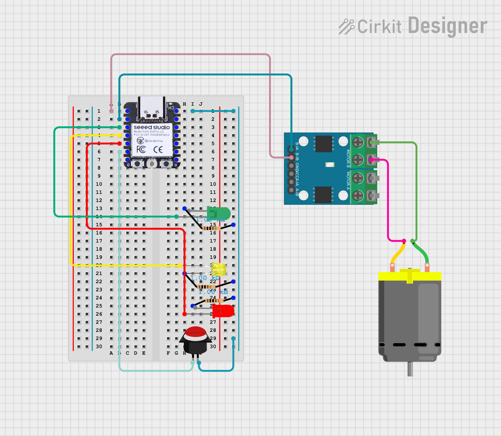
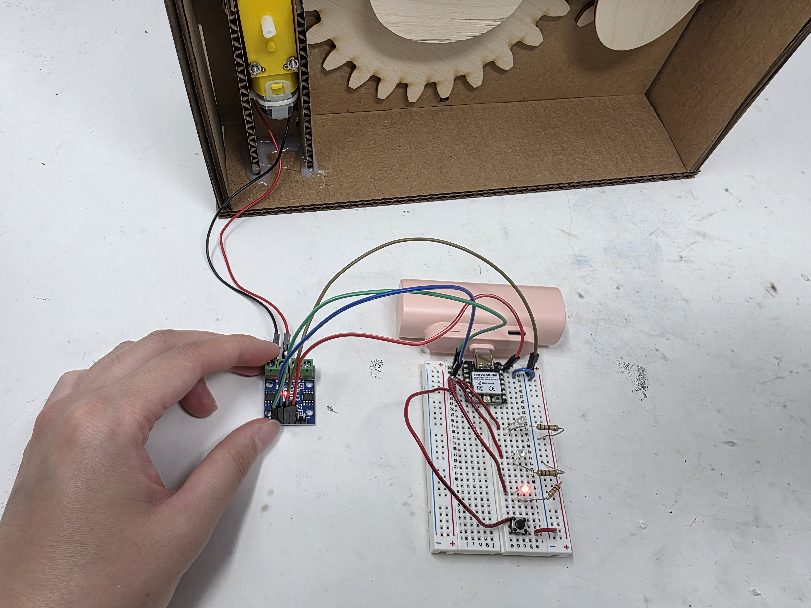

For this week, I decided to continue my kinematic machine and use my Xiao to control the motor and make my ducks play red light, green light. The circuit was pretty simple, consisting of just three leds, a motor driver, and a button to activate the mechanism. Here's a picture of the setup in circuit form, and it in real life:


For coding, I implemented it so that when the button wasn't pushed, the motor would be off and the red led would be on, representing a "red light" state of the game. When the button was pushed, the motor would run and the green light would be on, causing the ducks to bob up and down in the "green light" state. After the button was released, the yellow light would turn on and the ducks would continue to bob during this intermediate state, only stopping when the red light came back on an we returned to the "red light" state. All of the code was implemented without any delay() functions - insted, I used the millis() function to check how much time has passed and if we are still in the waiting period. Here's the code:
// Pin information
const int buttonPin = D5;
int greenPin = D2;
const int yellowPin = D3;
const int redPin = D4;
int buttonTime = -1;
int yellowOnTime = 3000;
bool on = false;
// int buttonPin = D0;
int val;
const int B1A = D1; // define pin 12 for B-1A (PWM Speed)
const int B1B = D0; // define pin 14 for B-1B (direction)
// setting PWM properties
const int freq = 5000;
const int resolution = 8;
void setup() {
// put your setup code here, to run once:
Serial.begin(9600);
pinMode(B1A, OUTPUT); // specify these pins as outputs
pinMode(B1B, OUTPUT);
ledcAttach(B1A, freq, resolution);
ledcWrite(B1A, 0); // start with the motors off
digitalWrite(B1B, LOW);
pinMode(greenPin, OUTPUT);
pinMode(yellowPin, OUTPUT);
pinMode(redPin, OUTPUT);
pinMode(buttonPin, INPUT_PULLUP);
digitalWrite(greenPin, LOW);
digitalWrite(yellowPin, LOW);
digitalWrite(redPin, LOW);
}
void loop() {
val = digitalRead(buttonPin);
Serial.println(val);
// If the button is pressed, turn the green light on and the other lights off
if (val == LOW) {
digitalWrite(greenPin, HIGH);
digitalWrite(yellowPin, LOW);
digitalWrite(redPin, LOW);
// Turn motor on
ledcWrite(B1A, 200);
on = true;
}
// If the button has been let go but we last measured that the device was on, then we turn the yellow pin on and the others off
else if (val == HIGH && on) {
buttonTime = millis();
digitalWrite(greenPin, LOW);
digitalWrite(yellowPin, HIGH);
digitalWrite(redPin, LOW);
on = false;
}
// If we have let go of the switch and we are still in the waiting period, have the yellow LED stay on
else if (val == HIGH && buttonTime != -1 && millis() - buttonTime < yellowOnTime) {
digitalWrite(greenPin, LOW);
digitalWrite(yellowPin, HIGH);
digitalWrite(redPin, LOW);
}
// Otherwise, we default to red light on and motor off
else{
digitalWrite(greenPin, LOW);
digitalWrite(yellowPin, LOW);
digitalWrite(redPin, HIGH);
// Turn motor off
ledcWrite(B1A, 0);
}
}
Download Code
And here's a video of the final product working! The yellow LED is a bit faint on camera but everything behaves wonderfully.